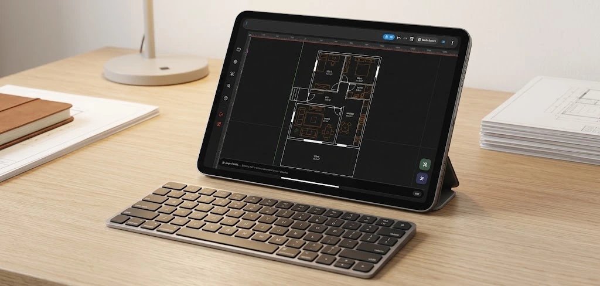

Tablette CAD Kullanımı: Klavye ile Daha Hızlı ve Verimli Teknik Çizim

CAD denildiğinde çoğu kişinin aklına büyük ekranlı bir bilgisayar, fare ve klavye ile çalışılan klasik bir masaüstü ortamı geliyor. Oysa teknik çizim ihtiyacı artık yalnızca ofiste veya sabit bir çalışma masasında ortaya çıkmıyor. Şantiyede, üretim alanında, proje toplantısında, eğitim sırasında veya seyahat ederken bir 2D teknik çizimi açmak, incelemek ya da düzenlemek gerekebiliyor.
Bu noktada mobil CAD ve özellikle tablet CAD kullanımı önemli bir alternatif hâline geliyor. Tabletin taşınabilirliği, dokunmatik kullanımın esnekliğiyle birleştiğinde teknik çizime ihtiyaç duyulan yere çalışma ortamını taşıyabilmek mümkün oluyor. Ancak profesyonel CAD kullanıcıları için yalnızca dokunmatik ekran yeterli olmayabilir. Hassas çizim, hızlı komut kullanımı ve alışılmış çalışma alışkanlıkları devreye girdiğinde fiziksel klavye önemli bir avantaj sağlayabilir.
TamgamCAD bu nedenle tablet ve mobil cihazlarda klavye kullanımını destekleyen bir çalışma deneyimi sunuyor. Amaç, mobil cihazın taşınabilirliğini korurken CAD kullanıcılarının alışık olduğu hızlı ve kontrollü çalışma yöntemlerinden mümkün olduğunca yararlanabilmesini sağlamak.
Tablet Üzerinde CAD Kullanmak Neden Avantajlı?
Tabletler, telefonlara göre daha geniş ekran alanı sunarken dizüstü bilgisayarlara göre daha hafif ve taşınabilir bir çalışma ortamı sağlayabilir. Bu özellik, teknik çizimlerin sahada veya toplantılarda incelenmesi açısından önemlidir.
Bir mimarın proje planını sahada kontrol etmesi, bir teknik personelin üretim çizimini incelemesi, bir öğrencinin teknik çizim üzerinde çalışması veya bir mühendisin toplantı sırasında DXF dosyasına erişmesi gerektiğinde bilgisayarın yanında bulunması her zaman mümkün olmayabilir. Tablet CAD yaklaşımı, bu tür senaryolarda teknik çizimi daha erişilebilir hâle getirebilir.
Buradaki amaç masaüstü CAD deneyimini tamamen değiştirmek değil; CAD çalışma alanını gerektiğinde mobil hâle getirmek. Kullanıcı, projesine ihtiyaç duyduğu yerde ulaşabildiğinde teknik çizim yalnızca ofiste yapılan bir iş olmaktan çıkar ve daha esnek bir çalışma sürecinin parçası hâline gelir.
Dokunmatik Ekran Neden Her Zaman Yeterli Olmayabilir?
Dokunmatik ekran çizimi doğrudan kontrol etme ve ekranda gezinme açısından büyük bir avantaj sunar. Ancak uzun süreli teknik çizim çalışmalarında çok sayıda komutu hızlı şekilde kullanmak gerektiğinde ekrana sürekli dokunmak çalışma hızını etkileyebilir.
Özellikle Trim, Offset ve Hatch gibi araçları sık kullanan bir CAD kullanıcısı için komutlara daha hızlı erişebilmek önemli olabilir. Fiziksel klavye burada dokunmatik ekranın alternatifi olmaktan çok onu tamamlayan bir araç olarak düşünülebilir.
Böylece kullanıcı çizim alanını dokunmatik olarak kontrol ederken, sık kullandığı komutları klavye üzerinden daha hızlı çağırabilir. Sonuçta tablet; yalnızca bir dosya görüntüleme cihazı değil, teknik çizim üzerinde aktif olarak çalışılabilen daha esnek bir CAD ortamına dönüşebilir.
Klavye ile Mobil CAD Kullanımının Avantajları
Fiziksel klavye kullanımı özellikle masaüstü CAD ortamına alışmış kullanıcıların mobil cihaza geçişini kolaylaştırabilir. Kullanıcı, dokunmatik arayüz ile klavyeyi birlikte kullanarak kendisine uygun bir çalışma yöntemi oluşturabilir.
- Daha hızlı komut erişimi: Sık kullanılan CAD araçlarına klavye üzerinden daha hızlı ulaşılabilir.
- Daha kontrollü çalışma: Dokunmatik ekran ile çizim alanını yönetirken klavye ile komut kullanımını ayırmak mümkün olur.
- Masaüstü alışkanlıklarının devamı: Klavye kullanan CAD kullanıcıları mobil ortama daha kolay uyum sağlayabilir.
- Taşınabilir çalışma: Teknik çizim çalışması ofis dışına taşınabilir.
- Toplantı ve saha kullanımı: Projeler ihtiyaç duyulan yerde açılıp incelenebilir.
DXF Dosyalarıyla Mobil ve Tablet Ortamında Çalışmak
Teknik çizim süreçlerinde DXF dosyaları önemli bir yere sahiptir. Farklı CAD ortamları arasında çizim verilerinin paylaşılmasında kullanılan bu format, özellikle mevcut projelerin başka cihazlarda görüntülenmesi ve düzenlenmesi gerektiğinde kullanışlıdır.
Ancak DXF dosyasına sahip olmak tek başına yeterli değildir. Dosyayı ihtiyaç duyulan anda açabilmek, çizimi inceleyebilmek ve çalışma sürecine devam edebilmek de önemlidir. Mobil CAD yaklaşımı burada devreye girer.
TamgamCAD ile DXF dosyalarını mobil ortamda görüntüleme ve düzenleme imkânı, teknik çizim çalışmalarını masaüstü bilgisayarın dışına taşıyabilir. Tablet ve fiziksel klavye birlikte kullanıldığında kullanıcı hem daha geniş bir ekran alanından hem de klavye kontrollü çalışma yönteminden yararlanabilir.
Sahada CAD Kullanımı: Ofisten Dışarı Taşan Teknik Çizim
Teknik çizimin sahada kullanılabilmesi, mobil CAD'in en önemli kullanım alanlarından biridir. Bir çizimin yalnızca ofiste hazırlanıp daha sonra çıktı alınması yerine, dijital dosyanın doğrudan sahada incelenebilmesi farklı çalışma senaryoları oluşturabilir.
Örneğin bir proje üzerinde çalışan ekip, toplantı sırasında ilgili çizimi tablet üzerinden açabilir. Üretim alanındaki bir kullanıcı teknik geometriyi inceleyebilir. Öğrenci veya eğitmen teknik çizimi ders ortamında değerlendirebilir. Bu senaryolarda tabletin taşınabilirliği önemli bir avantaj sağlar.
Klavye desteği ise özellikle çizim üzerinde aktif düzenleme yapılması gereken durumlarda mobil cihazın kullanım alanını genişletebilir. Böylece tablet yalnızca DXF görüntüleme amacıyla kullanılan bir ekran olmaktan çıkar; çizim sürecinin aktif bir parçası hâline gelebilir.
Mobil CAD Sadece Küçük Ekranda CAD Kullanmak Değildir
Mobil CAD'i yalnızca masaüstü CAD programının daha küçük bir ekrandaki versiyonu olarak düşünmek, mobil çalışma deneyiminin sunduğu fırsatları gözden kaçırabilir. Mobil cihazların asıl avantajı, teknik çizimi kullanıcının çalışma alanına götürebilmesidir.
Bu nedenle iyi bir mobil CAD deneyiminde yalnızca çizim araçlarının bulunması değil; dokunmatik kullanım, ekran alanının verimli kullanılması, dosyalara erişim, hızlı komut kullanımı ve farklı çalışma koşullarına uyum gibi konular da önemlidir.
TamgamCAD'in mobil yaklaşımı da bu düşünceyle şekilleniyor. Kullanıcı ister dokunmatik ekranı kullanabilir, ister fiziksel klavye bağlayarak çalışma yöntemini değiştirebilir. Böylece aynı teknik çizim farklı kullanım alışkanlıklarına göre ele alınabilir.
Tablet CAD Kimler İçin Faydalı Olabilir?
Tablet üzerinde CAD kullanımı yalnızca profesyonel CAD operatörleri için değil, teknik çizimle farklı seviyelerde çalışan birçok kullanıcı için faydalı olabilir.
- Mimarlar: Planları, detayları ve teknik çizimleri ofis dışında incelemek için.
- Mühendisler: Proje ve teknik çizimlere toplantı veya saha sırasında erişmek için.
- Teknikerler: Üretim veya saha ortamında çizimleri görüntülemek ve gerektiğinde düzenlemek için.
- CNC kullanıcıları: DXF tabanlı geometrileri mobil cihazda incelemek için.
- Öğrenciler: Teknik çizim pratiğini daha taşınabilir bir çalışma ortamına taşımak için.
- İç mimarlık ve mobilya çalışanları: Proje çizimlerini toplantı ve saha süreçlerinde yanlarında bulundurmak için.
Mobil CAD'de Verimli Çalışmak İçin Nasıl Bir Yaklaşım İzlenebilir?
Tablet üzerinde CAD kullanmaya başlayan bir kullanıcının masaüstündeki alışkanlıklarını birebir kopyalamaya çalışmak yerine dokunmatik ekran ile klavyenin güçlü yönlerini birlikte kullanması daha verimli bir çalışma düzeni oluşturabilir.
Çizim alanında gezinme ve görsel kontrol için dokunmatik ekranı, sık kullanılan komutlar için fiziksel klavyeyi kullanmak bunun bir örneğidir. Böyle bir çalışma biçiminde kullanıcı, her işlem için menüler arasında dolaşmak yerine ihtiyacına göre farklı giriş yöntemlerinden yararlanabilir.
Özellikle uzun süreli çalışmalarda kendi kullandığınız komutları, dosya yönetimi alışkanlıklarınızı ve ekran düzeninizi belirlemek mobil CAD deneyimini daha rahat hâle getirebilir.
2D Teknik Çizimden 3D Görselleştirmeye
Mobil CAD deneyimi yalnızca 2D çizim yapmakla sınırlı kalmak zorunda değildir. Hazırlanan teknik çizimin farklı bir perspektiften değerlendirilebilmesi, tasarımın anlaşılmasına da katkı sağlayabilir.
TamgamCAD'in 2D → 3D görselleştirme özelliği, teknik çizimi hazırlayan kullanıcının mevcut geometrisini üç boyutlu bir görünüm üzerinden incelemesine yardımcı olur. Bu özellik hakkında daha ayrıntılı bilgi edinmek için 2D Teknik Çizimleri 3D Görselleştirme yazımıza göz atabilirsiniz.
Böylece mobil çalışma ortamında yalnızca çizimi hazırlamak değil, hazırlanan çizimi farklı bir bakış açısından değerlendirmek de mümkün hâle gelir.
TamgamCAD ile Tabletinizi Bir CAD Çalışma Alanına Dönüştürün
Mobil CAD'in temel avantajı, teknik çizim için gereken çalışma ortamını kullanıcının bulunduğu yere taşıyabilmesidir. Tablet, dokunmatik ekranı sayesinde doğrudan çizim alanıyla etkileşim kurarken fiziksel klavye daha hızlı komut kullanımını destekleyebilir.
TamgamCAD bu yaklaşımı 2D CAD, DXF desteği ve mobil kullanım senaryolarıyla bir araya getiriyor. Böylece teknik çizim çalışmalarını yalnızca masaüstü bilgisayara bağlı tutmadan daha hareketli bir çalışma düzeni oluşturmak mümkün oluyor.
Buradaki amaç mobil cihazı masaüstü bilgisayarın birebir kopyası yapmak değil; CAD kullanıcılarının ihtiyaç duyduğu çizim ve düzenleme süreçlerini daha taşınabilir bir ortamda erişilebilir hâle getirmek.
Sonuç: CAD Çalışma Alanınız Artık Sizinle Birlikte Hareket Edebilir
Teknik çizim, yalnızca ofiste yapılması gereken sabit bir iş olmak zorunda değil. Mobil ve tablet cihazların gelişmesiyle birlikte 2D CAD çalışmalarını daha taşınabilir hâle getirmek mümkün.
Tabletin geniş ve dokunmatik ekranı ile fiziksel klavyenin hızlı komut kullanımını bir araya getirmek, özellikle CAD çalışma alışkanlıklarını mobil ortama taşımak isteyen kullanıcılar için pratik bir yaklaşım sunabilir. DXF dosyalarına erişim, teknik çizimleri inceleme ve gerektiğinde düzenleme gibi işlemler de bu hareketli çalışma düzeninin bir parçası olabilir.
TamgamCAD ile amaç, teknik çizim deneyimini masaüstünün dışına taşımak ve kullanıcıya ihtiyaç duyduğu anda çalışabileceği daha esnek bir CAD ortamı sunmak. Tabletinize klavyenizi bağlayın, teknik çizimlerinize erişin ve çalışma alanınızı bulunduğunuz yere taşıyın.
Tabletinizde CAD Çalışma Deneyimini Keşfedin
TamgamCAD'in mobil ve masaüstü sürümlerini, DXF desteğini, teknik çizim araçlarını ve mobil çalışma özelliklerini inceleyerek size uygun çalışma ortamını keşfedin.
TamgamCAD Sürümlerini Keşfet